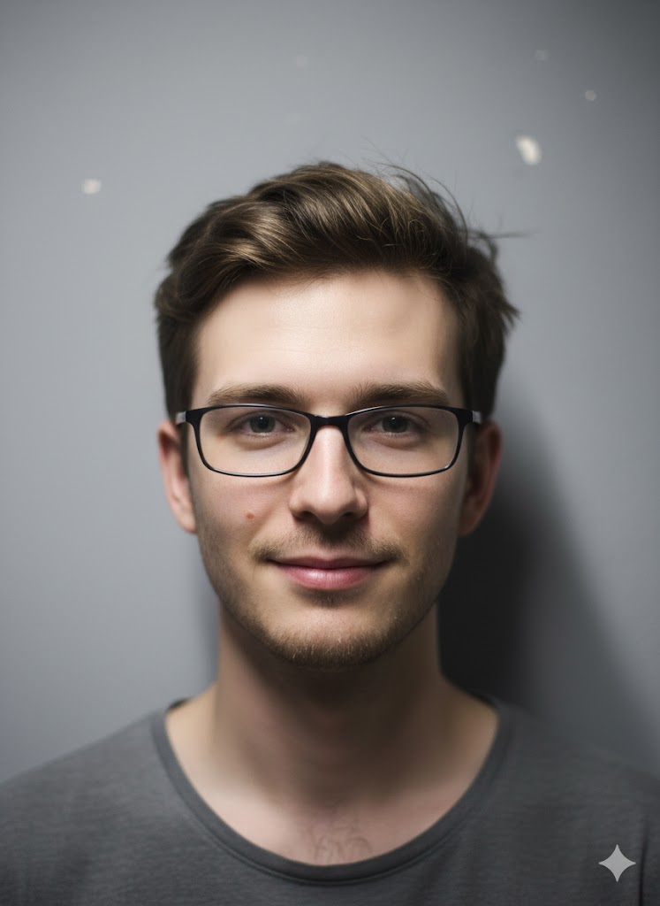

Pedro Cardoso | WDD 130
Olá! Meu nome é Pedro Cardoso e sou de Florianópolis, Santa Catarina. Gosto de nadar, jogar basquete, ler e fazer trilhas nas praias e morros da ilha. Sou um dos quatro filhos da família e trabalhei recentemente em projetos locais de restauração patrimonial.
Atualmente estou estudando desenvolvimento web front-end e busco oportunidades para atuar em empresas da região de Florianópolis e Grande Florianópolis.
